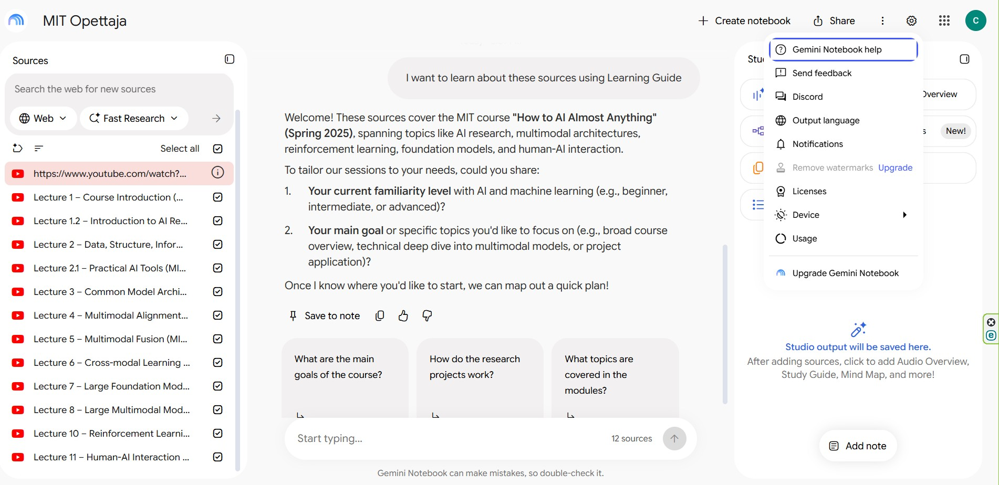
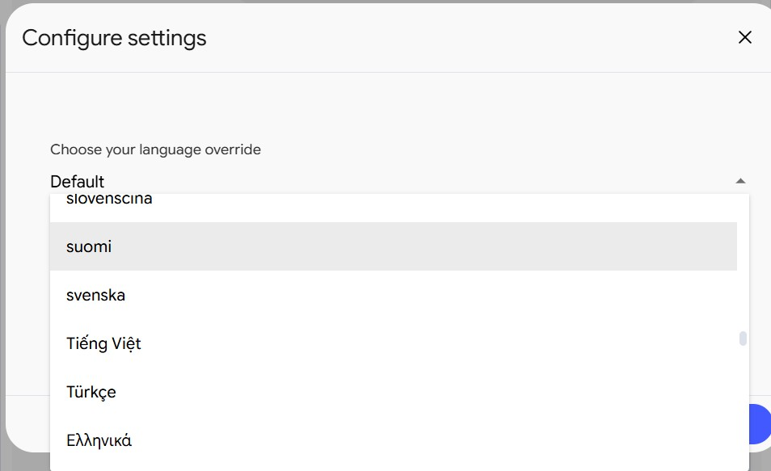
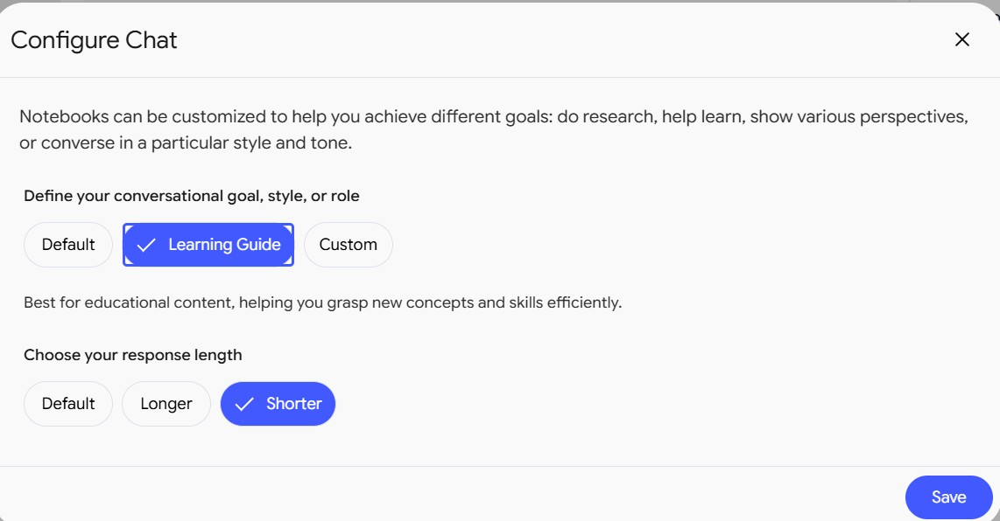

Oma opettaja Gemini Notebookiin Clauden avulla
Gemini Notebook (entinen NotebookLM) on Googlen palvelu, joka vastaa kysymyksiin vain niistä lähteistä, jotka annat sille. Sitä voi soveltaa tekoälyopettajana varauksin. Se ei keksi omiaan, vaan opettaa sen, mitä kirjassa tai videolla kerrotaan. Tärkeintä on se, että käyttää vain lähteitä, joita oikeasti SAA käyttää.
Oletuksena muistikirja vastaa englanniksi ja pitkästi. Tässä ohjeessa teet siitä suomenkielisen opettajan, joka selittää yhden asian kerrallaan ja kysyy sinulta välillä. Claude kirjoittaa opettajalle ohjeen. ChatGPT tarkistaa muistikirjan tekemän opiskelumateriaalin suomen. Osassa 2 Claude myös kuulustelee sinua ja pitää kirjaa siitä, mitä pitää kerrata.
Esimerkkinä on MIT:n kurssi How to AI (Almost) Anything. Muistikirjaan lisättiin 12 luentovideota. Samat vaiheet toimivat kirjoille, artikkeleille ja omille muistiinpanoille.

Miksi Gemini Notebook?
Kielimallit kuten Claude ja ChatGPT kirjoittavat parempaa suomea. Gemini Notebookilla on kolme asiaa, joita Claudella tai CGPT:llä ei ole:
- Lähteet linkistä. YouTube-linkki riittää, muistikirja lukee tekstityksen itse. Lähteet pysyvät muistikirjassa, joten jokainen keskustelu alkaa niistä.
- Lähdeviitteet. Jokainen vastaus näyttää kohdan, josta tieto on peräisin.
- Ääni ja video. Studio tekee aineistosta äänikoosteen, videon, käsitekartan, kertauskortit ja testin. Vastaustyylin tonaalisuus kannattaa muuttaa. Lähtökohtaisesti systeemi tuottaa tekopirteää jenkkihumppaa.
Lisäksi palvelu on ilmainen Google-tilillä. Muistikirjan voi jakaa muille.
Tässä ohjeessa kumpaakin käytetään siihen, missä se on parempi. Gemini Notebook hoitaa lähteet ja median, Claude ja ChatGPT kielen ja opetustavan. Jos aineistona on vain muutama PDF, pelkkä Claude-projekti riittää.
Mitä tarvitset
Osa 1 (selaimessa, noin 40 minuuttia):
- Google-tilin.
- Claude-tilin ja ChatGPT-tilin. Ilmaistilit riittävät.
- Lähteet: videolinkit, PDF-tiedostot tai verkkosivut.
Osa 2 (oma kone, noin 30 minuuttia), lisäksi:
- Maksullisen Claude-tilauksen (Pro, Max, Team tai Enterprise).
- VS Coden ja Claude Coden. Asennus on kuvattu Muistipaikka-ohjeessa.
Osa 1 riittää useimmille. Osa 2 on niille, jotka haluavat kertauskierrokset ja muistin siitä, mikä meni väärin.
Työnkulku kahdella tavalla:
Osa 1: Opettaja selaimessa
- Luo muistikirja. Lisää lähteet ja tarkista, että ne latautuivat.
- Vaihda kieleksi suomi. Muistikirja vastaa suomeksi.
- Pyydä Claudea kirjoittamaan ohje. Claude kertoo opettajalle, miten opettaa.
- Liitä ohje muistikirjaan. Ohje tulee voimaan heti.
- Opiskele. Kysy, vastaa ja kysy lisää.
- Tee materiaali ja tarkista suomi. Studio tekee materiaalin, ChatGPT korjaa kielen.
Osa 2: Claude kuulustelee
- Asenna Claude Code. Tekoälyavustaja VS Codeen.
- Yhdistä Claude muistikirjaan. Claude saa luvan käyttää muistikirjaa.
- Aloita kertauskierros. Claude kysyy, arvioi ja kirjaa kerrattavat asiat.
Osa 1: Opettaja selaimessa
1. Luo muistikirja ja lisää lähteet
- Avaa notebook.google.com ja kirjaudu Google-tililläsi.
- Paina Create notebook ja anna muistikirjalle nimi, esimerkiksi MIT Opettaja.
- Valitse lähteen tyyppi, esimerkiksi Websites tai YouTube, ja liitä linkki. Toista jokaiselle lähteelle.
- Odota, että lähteet latautuvat. Avaa muutama lähde ja tarkista, että siinä on tekstiä.
YouTube-kurssista lisää jokainen video erikseen. Soittolistan linkki ei tuo kaikkia videoita. Muistikirja lukee videon tekstityksen, ei kuvaa. Jos luennon kaaviot ovat tärkeitä, lisää myös luentokalvot.
Esimerkissä yksi video ei latautunut. Se näkyi lähdelistassa punaisena. Poista tällainen lähde tai etsi sille toinen versio.
2. Vaihda vastauskieleksi suomi
- Paina oikean yläkulman rataskuvaketta (Settings).
- Valitse Output language.
- Valitse listasta suomi ja tallenna.

Kieliasetus koskee kaikkia muistikirjojasi.
3. Pyydä Claudea kirjoittamaan opettajan ohje
Avaa claude.ai ja aloita uusi keskustelu. Kopioi alla oleva viesti ja vaihda hakasulkeissa olevat kohdat omiksesi.
Kirjoita ohje Gemini Notebookin Custom-keskustelutilaan. Muistikirjassa on [12 luentovideota MIT:n kurssilta How to AI (Almost) Anything]. Olen [aloittelija] ja haluan oppia [kurssin keskeiset käsitteet]. Muistikirjan pitää toimia opettajana: - vastaa suomeksi, lyhyesti ja selkeästi - käyttää vain muistikirjan lähteitä ja sanoo, jos asiaa ei käsitellä niissä - kertoo, mistä luennosta asia löytyy - selittää uuden käsitteen arkisella esimerkillä ja antaa englanninkielisen termin suluissa - kysyy ensin, mitä osaan ja mitä haluan oppia - opettaa yhden asian kerrallaan ja lopettaa jokaisen selityksen kysymykseen - kertoo vastaukseni jälkeen, oliko se oikein, osittain oikein vai väärin - ei paljasta vastausta kysymyksessä Sävy on asiallinen ja toteava. Ei kehuja eikä innostushuutoja. Kirjoita ohje suomeksi, enintään 2000 merkkiä. Anna pelkkä ohje ilman selityksiä.
Lue Clauden vastaus. Jos jokin kohta ei sovi, pyydä muutosta, esimerkiksi Lyhennä vastaukset 100 sanaan.
Valmis ohje
Jos haluat ohittaa tämän vaiheen, käytä tätä ohjetta. Se on kokeiltu MIT-muistikirjassa.
Olet opettaja. Opetat vain tämän muistikirjan lähteiden sisältöä. Kieli ja sävy - Vastaa aina suomeksi. Kirjoita lyhyitä, selkeitä virkkeitä. - Sävy on asiallinen ja toteava. Älä kehu, älä innostu, älä pahoittele. - Kun käytät uutta käsitettä, selitä se arkisella esimerkillä ja anna englanninkielinen termi suluissa. Lähteet - Käytä vain muistikirjan lähteitä. Älä täydennä omalla tiedolla. - Jos asiaa ei käsitellä lähteissä, sano se suoraan. - Kerro, mistä luennosta asia löytyy. Opetustapa - Kysy ensimmäisessä viestissä kaksi asiaa: mitä käyttäjä jo osaa ja mitä hän haluaa oppia. Odota vastausta. - Opeta yksi asia kerrallaan. Enintään 150 sanaa vastausta kohden, ellei käyttäjä pyydä enemmän. - Lopeta jokainen selitys yhteen kysymykseen, jolla käyttäjä voi tarkistaa ymmärryksensä. Odota vastausta ennen kuin jatkat. - Kysymys ei saa paljastaa vastausta. - Kun käyttäjä vastaa, kerro ensin, oliko vastaus oikein, osittain oikein vai väärin. Korjaa sitten virhe yhdellä tai kahdella virkkeellä. - Jos käyttäjä vastaa väärin kahdesti samaan asiaan, selitä se uudelleen toisella esimerkillä.
4. Liitä ohje muistikirjaan
- Avaa muistikirjan keskustelun asetukset Configure Chat.
- Valitse Custom.
- Liitä Clauden kirjoittama ohje tekstikenttään. Ohjeen enimmäispituus on 10 000 merkkiä.
- Valitse vastauksen pituudeksi Default ja paina Save.

Nopeampi vaihtoehto: valitse Learning Guide ja pituudeksi Shorter. Googlen valmis opetustila toimii ilman omaa ohjetta, mutta se ei tiedä sinun tavoitettasi eikä sävytoiveitasi.
5. Opiskele keskustelemalla
Kirjoita keskusteluun esimerkiksi Selitä minulle multimodaalinen kohdistaminen.
Esimerkissä opettaja vastasi 78 sanalla. Se selitti käsitteen, antoi esimerkin (sana koira yhdistyy kuvan kohtaan, jossa koira on), kertoi luennon ja kysyi lopuksi: Mitä multimodaalinen kohdistaminen tekee käytännössä, jos tekoälylle annetaan syötteeksi valokuva ja puheäänite?
Vastaa kysymykseen omin sanoin. Opettaja kertoo, oliko vastaus oikein, ja jatkaa siitä.
-
Tarkista lähde. Vastauksen numerot [1], [2] näyttävät kohdan, josta tieto on peräisin.
-
Tallenna hyvät vastaukset. Save to note tallentaa vastauksen muistiinpanoksi.
## 6. Tee opiskelumateriaali ja tarkista suomi
Gemini Notebook ymmärtää suomea hyvin, mutta kirjoittaa sitä kankeasti. Kokeilin tätä antamalla sen arvioida kymmenen suomenkielistä vastausta kolme kertaa. Oikeat ja selvästi väärät vastaukset se tunnisti joka kerta. Sen omassa tekstissä oli silti käännöskieltä (ydinoivallus), keksittyjä sanoja (anturiläheisyys) ja keskimäärin 22 sanan virkkeitä.
Siksi muistikirjan tekemä materiaali kulkee kielentarkistuksen kautta ennen käyttöä.
Tee materiaali Studiossa
- Avaa oikean reunan Studio-paneeli.
- Valitse tuotos, esimerkiksi opiskeluopas (Reports → Study guide), kertauskortit (Flashcards) tai testi (Quiz).
- Odota, että tuotos valmistuu, ja avaa se.
Raportin tekstin voi kopioida suoraan. Kertauskortit ja testin saat helpommin tekstinä keskustelusta: Tee 20 kertauskorttia muodossa kysymys | vastaus.
Tarkista kieli ChatGPT:llä
Avaa chatgpt.com ja aloita uusi keskustelu. Liitä alla oleva kehote ja sen perään muistikirjan teksti. Tarkista yksi tuotos kerrallaan.
Tarkista liittämäni opiskeluaineisto. Aihe on [aihe], lukija on aloittelija. Korjaa suomi luontevaksi: - poista englannin lauserakenteet ja käännöslainat - lyhennä pitkät virkkeet ja poista toisto - korvaa tarpeettomat lainasanat suomella, mutta säilytä vakiintuneet termit Älä muuta väitteiden merkitystä, lukuja, lähdeviitteitä tai vastauksia. Jos jokin kohta vaikuttaa virheelliseltä, merkitse se sanalla TARKISTA äläkä korjaa sitä arvaamalla. Anna ensin korjattu teksti. Luettele sen jälkeen TARKISTA-kohdat. TEKSTI: [liitä muistikirjan teksti]
Claude käy kielentarkistukseen yhtä hyvin. Sama kehote toimii molemmissa.
Tarkista TARKISTA-kohdat lähteestä. Avaa muistikirjassa vastaava lähdeviite ja vertaa. Jos olet epävarma, liitä ChatGPT:lle sekä luonnos että lähteen kohta:
Vertaa luonnoksen väitettä alla olevaan lähdekohtaan. Käytä vain tätä lähdekohtaa. Tee taulukko: väite | tukeeko lähde | korjaus. Jos lähde ei riitä arvioon, sano se. LUONNOS: [liitä kohta] LÄHDE: [liitä lähteen kohta]
Tallenna korjattu versio
Korjaus ei muuta Studion tuotosta. Tallenna korjattu teksti muistikirjaan: paina Studio-paneelin alareunasta Add note ja liitä teksti. Anna muistiinpanolle nimi, esimerkiksi Korjattu suomi – opiskeluopas.
Ääni ja video
Äänikoostetta (Audio Overview) ja videota (Video Overview) ei voi korjata tekstinä. Tee ne uudelleen ohjeen kanssa: paina tuotoksen kynäkuvaketta ennen luomista ja liitä ohje kenttään.
Tee rauhallinen opetusesitys aiheesta [aihe]. Puhe on asiallista ja toteavaa: ei tekopirteyttä, hämmästelyä eikä puhujien keskinäistä kehumista. Aloita käytännön kysymyksestä ja päätä sen ratkaisuun. Uudet käsitteet tulevat vastaan luontevasti: nimeä käsite ja selitä se esimerkillä, älä puolustele sitä. Käytä vain lähteiden esimerkkejä.
Kuuntele tulos. Ohje parantaa sävyä, mutta ei takaa sitä.
Osa 2: Claude kuulustelee
Osassa 1 opiskelet silloin, kun muistat avata muistikirjan. Osassa 2 Claude Code kysyy kysymykset, antaa muistikirjan arvioida vastaukset ja kirjaa virheet tiedostoon. Seuraava kierros alkaa niistä asioista, jotka menivät väärin.
Claude käyttää muistikirjaa notebooklm-py-työkalulla. Se on avoimen lähdekoodin työkalu, ei Googlen virallinen. Se voi lakata toimimasta, jos Google muuttaa palvelua.
7. Asenna Claude Code
Tee Muistipaikka-ohjeen vaiheet 1, 3 ja 4: asenna VS Code, asenna Claude Code -laajennus ja kirjaudu Claudeen.
Tee sitten tyhjä kansio, esimerkiksi opettaja, ja avaa se VS Codessa: File → Open Folder….
8. Yhdistä Claude muistikirjaan
Kopioi alla oleva viesti Claude-paneeliin ja paina Enter.
Asenna notebooklm-py-komentorivityökalu, jolla voit käyttää Gemini Notebookia. Asenna se uv:llä komennolla uv tool install "notebooklm-py[browser]". Jos uv puuttuu, asenna se ensin. Kun asennus on valmis, kerro, miten kirjaudun.
Claude kysyy lupaa ennen asennuskomentoja. Hyväksy ne.
Kirjautuminen on ainoa vaihe, jonka teet itse, koska se avaa selaimen:
- Avaa VS Coden pääte: Terminal → New Terminal.
- Kirjoita
notebooklm loginja paina Enter. - Kirjaudu selaimessa samalla Google-tilillä, jolla teit muistikirjan.
- Palaa päätteeseen ja paina Enter, jos se pyytää.
Kirjoita sitten Claudelle:
Kirjauduin. Tarkista yhteys ja etsi muistikirja MIT Opettaja.
Claude listaa muistikirjan lähteet. Jos jokin lähde on virhetilassa, Claude kertoo sen.
9. Aloita kertauskierros
Kuulustele minua muistikirjasta MIT Opettaja. Pyydä muistikirjalta 5 kertauskysymystä suomeksi, yksi kustakin eri luennosta. Kysymys ei saa paljastaa vastausta. Näytä minulle vain kysymykset. Kun vastaan, anna muistikirjan arvioida vastaukset lähteiden perusteella: Oikein, Osittain tai Väärin, mitä puuttui ja mistä luennosta asia löytyy. Tallenna tulos tiedostoon kertaus.md.
Vastaa kaikkiin kysymyksiin yhdessä viestissä. Saat vastata myös en tiedä.
Ensimmäisellä kierroksellani tulos oli 2 / 5. kertaus.md näytti tältä:
| Aihe | Arvio | Kerrattava luento |
|---|---|---|
| Multimodaalinen kohdistaminen | Väärin | Lecture 4 |
| Vahvistusoppiminen vs. ohjattu | Osittain | Lecture 10 |
| Miksi CNN sopii kuviin | Osittain | Lecture 3 |
Osittain ja Väärin voivat vaihdella kierrosten välillä. Samat vastaukset saivat kolmella arviointikerralla eri arvion. Kertaa molemmat.
Lue kerrattavat luennot. Aloita muutaman päivän päästä uusi kierros:
Uusi kertauskierros. Lue kertaus.md ja pyydä muistikirjalta 3 uutta kysymystä aiheista, jotka menivät väärin tai osittain. Kysy käytännön esimerkin kautta. Älä toista vanhoja kysymyksiä äläkä paljasta vastausta kysymyksessä. Lisää tulos kertaus.md:hen.
Claude ja muistikirja eivät muista aiempia kierroksia ilman tätä tiedostoa. Pidä kertaus.md samassa kansiossa ja avaa aina sama kansio.
Jos jokin menee pieleen
ChatGPT muutti sisältöä, ei vain kieltä.
Vertaa kohtaa lähteeseen toisella kehotteella (vaihe 6). Pyydä sitten: Palauta alkuperäinen merkitys. Korjaa vain kieli.
Muistikirja vastaa englanniksi. Tarkista, että Output language on suomi (vaihe 2). Varmista, että ohjeessa lukee Vastaa aina suomeksi.
Vastaukset ovat liian pitkiä. Lyhennä ohjeen sanamäärää, esimerkiksi Enintään 80 sanaa, tai valitse pituudeksi Shorter.
Lähde näkyy punaisena. Lähdettä ei voitu lukea. YouTube-videolta puuttuu usein tekstitys. Poista lähde ja lisää toinen versio tai luentokalvot.
Claude sanoo, että kirjautuminen on vanhentunut.
Kirjautuminen vanhenee ajan myötä. Kirjoita päätteeseen uudelleen notebooklm login.
Claude ei löydä muistikirjaa. Kirjauduit todennäköisesti eri Google-tilillä. Kirjaudu uudelleen sillä tilillä, jolla muistikirja on tehty.
Kysymys paljastaa vastauksen. Lisää kehotteeseen Kysymys ei saa sisältää vastausta. Muistikirja tekee tämän virheen helposti, kun sitä pyydetään kysymään käytännön esimerkin kautta.
Lähteet
- Gemini Notebook -ohje: lähteet, kieliasetus ja keskustelun asetukset.
- notebooklm-py: komentorivityökalu, jolla Claude käyttää muistikirjaa.
- Gencay: I Built an AI Tutor with NotebookLM & Claude: idea kuulustelevasta opettajasta.
- Gencay: NotebookLM Beginner's Guide: Studion tuotokset.
- MIT: How to AI (Almost) Anything: esimerkin lähdeaineisto.
Opettajan ohje, kertauskierrokset ja suomen arviointi kokeiltu MIT Opettaja -muistikirjalla 7.10.2026, notebooklm-py 0.8.2. Kielentarkistuksen kehotteet perustuvat ChatGPT:llä tehtyyn MIT-aineiston korjaukseen.